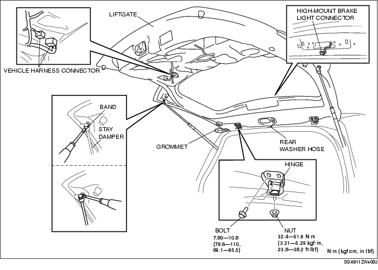

Liftgate removal/installation
- • Removing the stay damper without supporting the liftgate can be dangerous. The liftgate may fall and injure you. Always perform the following procedure with at least another person.
1. Disconnect the negative battery cable.
2. Remove the liftgate trim. (See LIFTGATE TRIM REMOVAL/INSTALLATION.)
3. Disconnect the vehicle harness connector on the liftgate.
4. Disconnect the high-mount brake light connector. (See HIGH-MOUNT BRAKE LIGHT REMOVAL/INSTALLATION.)
5. Remove the grommet from the liftgate, then pull out the vehicle harness.
6. Using a flathead screwdriver, remove the connecting band between the liftgate and the stay damper.
7. Pry out the connecting part of the stay damper and the hinge with a flathead screwdriver to disconnect them. Then remove the stay damper.
8. Remove the bolts, then remove the liftgate.
9. To remove the hinge, detach the rear part of the headliner, then remove the nuts.

10. Install in the reverse order of removal.